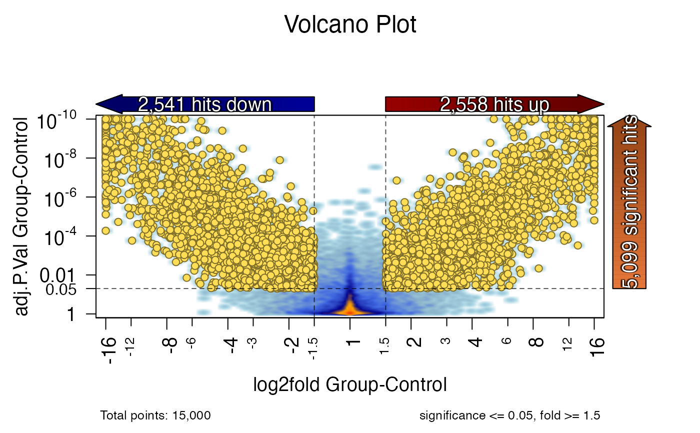

Draw a volcano plot using reasonable default arguments.
volcano_plot(
x,
n = NULL,
lfc_colname = c("logfc", "log2fold", "log2fc", "lfc", "l2fc", "logratio", "log2ratio"),
fold_colname = c("fold", "fc", "ratio"),
fold_cutoff = 1.5,
fold_max_range = 16,
fold_min_range = 4,
sig_colname = c("adj.P.Val", "padj", "adj.pval", "adjp", "P.Value"),
sig_cutoff = 0.05,
sig_max_range = 1e-10,
sig_min_range = 1e-04,
expr_colname = c("mgm", "groupmean", "mean", "AveExpr", "fkpm", "rpkm", "tpm", "cpm"),
expr_cutoff = NULL,
label_colname = c("gene", "symbol", "protein", "probe", "assay"),
main = "Volcano Plot",
submain = NULL,
blockarrow = TRUE,
blockarrow_colors = c(hit = "#E67739FF", up = "#990000FF", down = "#000099FF"),
blockarrow_font = 1,
blockarrow_cex = c(1.2, 1.2),
blockarrow_label_cex = 1,
blockarrow_shadowtext = TRUE,
symmetric_axes = TRUE,
do_cutoff_caption = TRUE,
caption_cex = 0.8,
include_axis_prefix = FALSE,
n_x_labels = 12,
n_y_labels = 7,
xlim = NULL,
ylim = NULL,
pt_cex = 0.9,
pt_pch = 21,
hit_type = "hits",
color_set = c(base = "#77777777", up = "#99000088", down = "#00009988", hi =
"#FFDD55FF", hi_up = "#FFDD55FF", hi_down = "#FFDD55FF"),
border_set = NULL,
point_colors = NULL,
border_colors = NULL,
abline_color = "#000000AA",
smooth = TRUE,
smooth_func = jamba::plotSmoothScatter,
smooth_ramp = colorRampPalette(c("white", "lightblue", "lightskyblue3", "royalblue",
"darkblue", "orange", "darkorange1", "orangered2")),
tophist = FALSE,
tophist_cutoffs = c("pvalue", "foldchange"),
tophist_breaks = 100,
tophist_color = "#000099FF",
tophist_fraction = 1/3,
tophist_by = 0.2,
hi_points = NULL,
hi_colors = NULL,
hi_hits = FALSE,
hi_cex = 1,
do_both = FALSE,
label_hits = FALSE,
add_plot = FALSE,
xlab = NULL,
ylab = NULL,
cex.axis = 1.2,
mar_min = c(6, 5, 6, 5),
transFactor = 0.24,
transformation = function(x) {
x^transFactor
},
nbin = 256,
verbose = TRUE,
...
)data.frame that contains statistical results with at
least a P-value, and fold change or log2 fold change. It is
useful to contain a column with mean expression, and a column
with a relevant label.
integer indicating the number of subset points to plot
for testing purposes.
character string or vector used to match
colnames(x) whose values should be log2 fold changes.
A direct match to colnames(x) is performed
first, then if no column is found, the values are used as
regular expression patterns in order until the first
matching colname is found. Note that lfc_colname is used
in preference to fold_colname.
The colname used will appear as the x-axis label.
character string or vector used to match
colnames(x) whose values should be fold changes. Note that
if lfc_colname successfully finds a value, the fold_colname
is not used.
The colname if used will appear as the x-axis label.
numeric threshold for values in lfc_colname
or fold_cutoff, where normal fold change values at or above
fold_cutoff can be considered statistically significant.
Note that when lfc_colname is being used, its values are
converted to normal fold change before applying this filter.
numeric indicating the maximum range to display
on the x-axis fold change. This argument prevents extremely
large fold changes from compressing the useful visible range
of the figure.
numeric indicating the minimum range to display
on the x-axis fold change. This argument is useful
when fold changes are low and the x-axis range would otherwise
be too small to be very useful.
character string or vector used to match
colnames(x) whose values should contain P-values of significance.
The P-values can be unadjusted (raw) P-values, or adjusted
P-values. The P-values are expected not to be -log10()
transformed.
The colname used will appear as the y-axis label.
numeric threshold for values in sig_colname,
where values at or below sig_cutoff can be considered
statistically significant.
numeric indicating the maximum range to display
on the y-axis significance. This argument prevents extremely
small P-values from compressing the useful visible range
of the figure.
numeric indicating the minimum range to display
on the y-axis significance. This argument is useful
when P-values are not very significant, and you want to make
sure the y-axis range shows a minimum amount of the significant
region to be visually interpretable in that context.
character string or vector used to match
colnames(x) whose values should contain expression mean values.
This column is only used when expr_cutoff is defined and
is applied to the filter criteria for statistical hits.
numeric threshold for values in expr_colname
when expr_colname is defined, where values in expr_colname
at or above expr_cutoff can be considered statistically
significant. This threshold is useful to filter out potential
statistical hits whose signal is below a noise signal threshold.
character string or vector used to match
colnames(x) whose values should contain a useful label,
for example gene symbol or assay identifier.
character string used as the main title of the figure.
character string used as a sub-title of the figure.
logical indicating whether block arrows should
be displayed and used to indicate the number of statistical hits.
arguments used when blockarrow=TRUE.
logical indicating whether the x-axis
log fold change range should be symmetric above and below zero.
logical indicating whether to display
text caption with the statistical cutoff values used, and the
total number of points displayed.
numeric caption font size adjustment.
logical indicating whether to include
a prefix for the x-axis and y-axis labels: x-axis "Change";
y-axis "Significance".
integer used by pretty() to determine
the approximate number of x-axis and y-axis labels to display,
respectively.
numeric used to define specific xlim and ylim
axis ranges. When NULL the ranges are defined automatically,
using fold_min_range,fold_max_range for the x-axis, and
sig_min_range,sig_max_range for the y-axis.
numeric used to define point size and shape,
used only when individual points are displayed.
character string used to label points that meet
the statistical cutoffs as "hits", but where it may be useful
to indicate the type of entry being tested. For example:
hit_type="genes" indicates that each row represents a gene;
hit_type="probes" indicates each row represents a probe;
hit_type="transcripts" indicates each row represents a transcript.
character vector of R colors, used only when individual
points are display. The names override default values, and may include:
"base" - the base color of all points on the plot
"up" - the color for up-regulated points that meet all
statistical cutoffs to be a "hit".
"down" - the color for down-regulated points that meet all cutoffs
"hi" - base color for highlighted points, used when hi_points
is defined.
"hi_up" - color for highlighted up-regulated points.
"hi_down" - color for highlighted down-regulated points.
NULL or character vector of R colors, used to
define point border colors such as pch=21 which is a filled circle
with border. When border_set=NULL then it is defined by
jamba::makeColorDarker(color_set).
optional character vector of R colors
recycled to length nrow(x), used to specify the exact color of each
point in x. This argument is useful to colorize certain specific
points that may otherwise not meet statistical criteria.
character string with R color used to color
the abline that indicates the x-axis fold_cutoff value, and
y-axis sig_cutoff value.
logical indicating whether points should be drawn
as a smooth scatter plot, using jamba::plotSmoothScatter().
When smooth=FALSE individual points are drawn, using
point_colors, or when point_colors is not defined the
default is to use color_set to colorize points based upon
statistical cutoffs.
function used to plot points when smooth=TRUE,
by default jamba::plotSmoothScatter() which has some benefits
over default graphics::smoothScatter().
character vector of R colors which defines
the color gradient to use when smooth=TRUE.
logical indicating whether to display a histogram
at the top of the volcano plot figure.
arguments used when tophist=TRUE.
character vector indicating points to highlight
in the volcano plot, where values should match rownames(x).
This argument is useful to highlight a specific subset of points of
interest on the figure. Note that hi_points are always
rendered as individual points even when smooth=TRUE.
logical indicating whether rows that meet all
statistical cutoffs and are considered "hits" should also be
treated as hi_points for the purpose of rendering individual
points.
numeric size adjustment for highlight points,
relative to the size of other points in the figure.
logical indicating whether to draw both a smooth
scatter and individual points on the same figure.
logical indicating whether to add a text label
for points that are statistical hits.
logical indicating whether the plot should be
added to an existing plot, or when add_plot=FALSE a new
plot is created. This argument is useful to re-run the
same volcano plot with alternate parameters, for example
to display different subsets of highlighted points.
character strings used to specify the exact
x-axis label and y-axis label. When either value is NULL
the default is to use the relevant colname: x-axis uses
either lfc_colname or fold_colname; y-axis uses sig_colname.
numeric adjustment for axis label font sizes.
function passed to smooth_func used to
adjust the visual contrast of the resulting density plot.
numeric value passed to smooth_func and used
by jamba::plotSmoothScatter() to adjust the number of
bins used to display the density of points, where a higher
value shows more detail, and a lower value shows less detail.
logical indicating whether to print verbose output.
Note that verbose=2 will enable much more verbose output.
additional arguments are ignored.
vector used to ensure that each margin size is
at least a minimum value, applied to par("mar") via
the function pmax().
Draw a volcano plot using a reasonably robust set of default arguments, and with a large number of customization options. The default plot uses smooth scatter plot for much improved display of point density.
This function produces a volcano plot, which consists of change on the x-axis, and significance on the y-axis.
In addition to displaying the volcano plot, this function also displays statistical thresholds, and marks entries as "hits" by up to three conceptual filters:
"change" - fold change fold_cutoff
"significant" - statistical P-value sig_cutoff
"detected" - signal expr_cutoff
If any cutoff is not defined, that filter is ignored.
Change is usually represented using log2 fold changes,
and in this case is labeled using normal scale fold change
values. The threshold is defined with fold_cutoff using
normal space values. The log2 fold change values which
have greater magnitude than fold_cutoff are marked
"changing".
Significance usually represents adjusted P-value, or raw
P-value if necessary. The threshold is defined with sig_cutoff
using a P-value below which entries are marked "significant".
Finally, since some statistical criteria also include a minimum
level of signal, a threshold expr_cutoff requires an entry to
have signal at or above this value to be considered "detected".
The default behavior of volcano_plot() is to render a
smooth scatter plot. A smooth scatter plot is much more
effective at representing the true point density along
the figure, which is one of the primary reasons to produce
the plot.
Other jam plot functions:
ggjammaplot()
n <- 15000;
set.seed(12);
x_lfc <- (rnorm(n) * 1);
x_lfc <- x_lfc^2 * sign(x_lfc);
x_lfc <- x_lfc[order(-abs(x_lfc) + rnorm(n) / 2)];
x_pv <- sort(10^-(rnorm(n)*1.5)^2);
x <- data.frame(
Gene=paste("gene", seq_len(n)),
`log2fold Group-Control`=x_lfc,
`P.Value Group-Control`=x_pv[order(-abs(x_lfc))],
`mgm Group-Contol`=((rnorm(1500)+5)^2)/5,
check.names=FALSE);
volcano_plot(x);
#> ## (12:00:13) 26Jun2023: volcano_plot(): sig_colname: P.Value Group-Control
#> ## (12:00:13) 26Jun2023: volcano_plot(): lfc_colname: log2fold Group-Control
#> Warning: coercing argument of type 'double' to logical
volcano_plot(x, expr_cutoff=3);
#> ## (12:00:13) 26Jun2023: volcano_plot(): sig_colname: P.Value Group-Control
#> ## (12:00:13) 26Jun2023: volcano_plot(): lfc_colname: log2fold Group-Control
#> ## (12:00:13) 26Jun2023: volcano_plot(): expr_colname: mgm Group-Contol
#> ## (12:00:13) 26Jun2023: volcano_plot(): 13160 values of 15000 met the threshold.
#> Warning: coercing argument of type 'double' to logical
# volcano_plot(x, mar_min=c(7, 6, 6, 5), blockarrow_cex=1);
# par("mfrow"=c(2, 1));
# volcano_plot(x);
# volcano_plot(x);
# par("mfrow"=c(1, 1));
x[["fold Group-Control"]] <- log2fold_to_fold(x[["log2fold Group-Control"]]);
x[["adj.P.Val Group-Control"]] <- x[["P.Value Group-Control"]];
volcano_plot(x, hi_hits=TRUE);
#> ## (12:00:13) 26Jun2023: volcano_plot(): sig_colname: adj.P.Val Group-Control
#> ## (12:00:13) 26Jun2023: volcano_plot(): lfc_colname: log2fold Group-Control
#> Warning: coercing argument of type 'double' to logical
